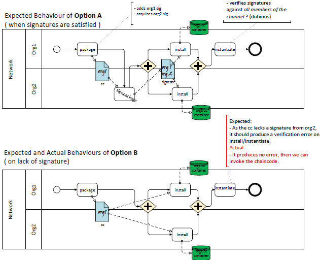

How can I ensure that all organizations have signed the chaincode to install?
In Hyperledger Fabric 1.3, how can I ensure that all organizations have signed the chaincode to install ?
I could sign the code, but it seems that no component verifies the signature.
Details are as below:
Preconditions
- Fabric 1.3
- I have two orgs, org1 and org2.
- org1 wants to verify that org2 has signed the code, and vice versa, for non-repudiation (undeniability).
- I know that we can install chaincode without signatures by
peer chaincode install.
Expected Behaviour
In the below Commands, I expected that:
- Option A must succeed, because the chaincode includes signatures from both orgs.
- Option B must produce some kind of error or warning, because the chaincode lacks a signature from org2.
Actual Behaviour
- Not only Option A but B also succeeds with no errors, which is against the expectation.
Commands
org1> peer chaincode package -n mycc -v 0 example02/cmd -s -S \ -i "AND('Org1MSP.admin')" cc.out Option A: org2> peer chaincode signpackage cc.out signedcc.out org1> peer chaincode install -n mycc -v 0 signedcc.out org2> peer chaincode install -n mycc -v 0 signedcc.out Option B: org1> peer chaincode install -n mycc -v 0 cc.out org2> peer chaincode install -n mycc -v 0 cc.out org1> peer chaincode instantiate -o orderer:7050 -C mychannel \ -n mycc -v 0 -c '(snip)' -P "AND ('Org1MSP.peer','Org2MSP.peer')" # Then Org2 makes a query.
The flow

Answer
There is currently no enforcement of signed chaincode packages within Hyperledger Fabric. In version 2.0 (targeted for late March), there will be a new lifecycle for chaincode which will provide this type of functionality.
For the current 1.3 and upcoming 1.4 releases, it will be up to the organization installing the chaincode to check that they have the right / enough signatures for the chaincode package prior to installing.